User Guide
Build Warhammer 40,000 army lists, check them against the rules, play games with them and share them – all without an internet connection.
Players
Sections 1–5 cover everything you need: building a list, playing a game and sharing lists with other people and apps.Keeping the data right
Sections 6–7 explain updating the army data and using the data editor to change points, stats, rules and add new units.1. Getting started
You're ready to go – everything runs from this folder on your computer, with no installation and no internet connection needed.
Your first list in four steps
- Go back to the list builder's home screen and choose your Faction, Battle size and a name, then click Create roster (more on the home screen).
- Click Detachment under Configuration on the left and pick your detachment (details).
- Add units from the Add unit list in the middle, and choose their wargear (adding units, options).
- Keep an eye on the top bar – it shows your points and turns to ✓ Valid when the list is legal (list checks).
When you're ready to play, press ▶ Play (Play mode). To send your list to someone, use Export list (Exporting).
Good to know
- Your lists save automatically – in your web browser, not in the folder. They'll be there every time you open the program in the same browser. To move lists to another browser or computer, or to keep a backup, use Save file and Import list.
- Chrome or Edge work best. The data editor needs one of them to save changes.
- You can move the folder anywhere (another drive, a USB stick) – it keeps working. Your lists stay in the browser either way.
On a phone
On a phone held upright the layout changes to fit the small screen (tablets and computers keep the normal layout):
- List builder: a tab bar at the bottom switches between ☰ Army, ＋ Add, ✎ Unit (the selected unit's options) and ▤ Datasheet (or the list Summary). Adding or tapping a unit takes you straight to its options; Done takes you back to your army.
- Top bar: just the points, the issues badge and ▶ Play. Everything else – the list name and Rename, Detachment Points and Enhancements, Undo/Redo, Export, Print, Save file and Home – is in the ⋯ menu.
- Play mode: the scoreboard shrinks to one line (your VP and CP, the round and phase, your opponent's VP and CP, and Next ▸) that stays at the top as you scroll. Tap ▾ for the full counters. Your units are a strip you swipe sideways; Scores, Wound roll, army rules, New game and Exit are in the ⋯ menu.
- Buttons, counters and tick boxes are bigger, so they're easier to tap, and tapping a text box no longer zooms the page in.
- Datasheet tables scroll sideways with your finger instead of squashing when a weapon has lots of keywords.
On every device:
- Tap for details: tap a red Damaged value, a gold changed value, a force disposition icon or a tag to see what it means (on a computer you can also just hover over it). Tap anywhere else to close it.
- Screen stays on in play mode: while play mode is open your phone or tablet won't dim or lock (where the browser allows it).
Using it from the website, offline and on tablets
If you open NovaList from its web address (for example a GitHub Pages link) instead of from a folder, it saves itself on your device the first time: the home screen's Game data card shows Saving for offline use… and then ✓ Ready to use offline. After that it opens and works with no internet connection – including on phones and tablets.
- Install it like an app: in Chrome on Android use ⋮ → Add to Home screen (on a computer, the install icon in the address bar). It opens in its own window with a NovaList icon.
- Updates: whenever you're online it picks up the latest version automatically and saves that for offline use too.
- Lists you make on the website are saved in that browser, separately from lists in a copy opened from a folder – use Save file and Import list to move them.
You can come back to this guide at any time with the ? button at the top right of the list builder, 📖 Open the user guide on its home screen, or ? Help in the data editor.
2. The home screen
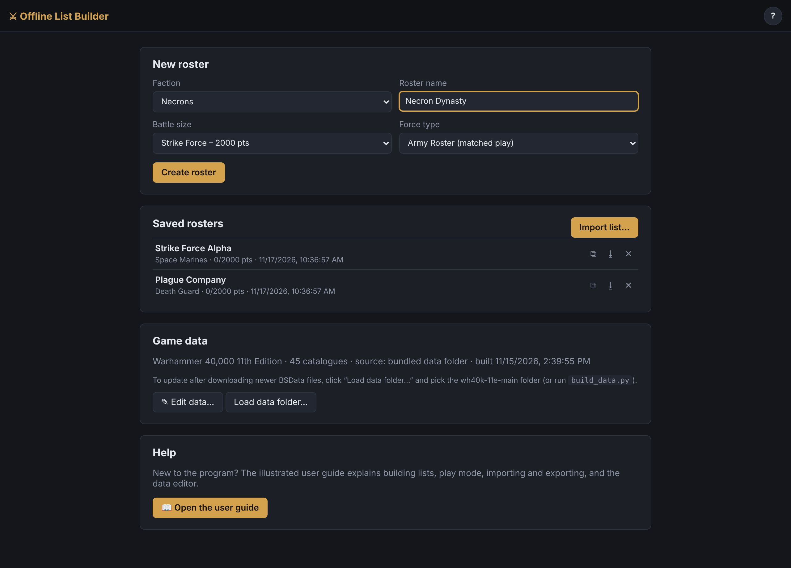
Creating a list
- Choose your Faction.
- Type a Roster name (optional – you can change it later).
- Pick the Battle size: Incursion (1000 pts), Strike Force (2000 pts) or Onslaught (3000 pts).
- Pick the Force type: Army Roster for normal matched play, Crusade Force or Boarding Actions.
- Click Create roster.
Saved rosters
Every list you've made appears under Saved rosters, newest first, showing the faction, points and when it was last changed. Click a list to open it. The small buttons on the right of each list:
| Button | What it does |
|---|---|
| ⧉ | Makes a copy of the list (handy for trying variations). |
| ⭳ | Saves the list as a file on your computer (see Saving & backing up). |
| ✕ | Deletes the list (it asks first). |
Import list… brings in a list from text, a New Recruit / BattleScribe file or a file saved by this program – see Importing a list.
Game data
The bottom card shows which army data the program is using and has buttons for ✎ Edit data… (opens the data editor) and Load data folder… (see Keeping the data up to date).
Help
The 📖 Open the user guide button underneath opens this guide.
3. Building a list
The screen layout
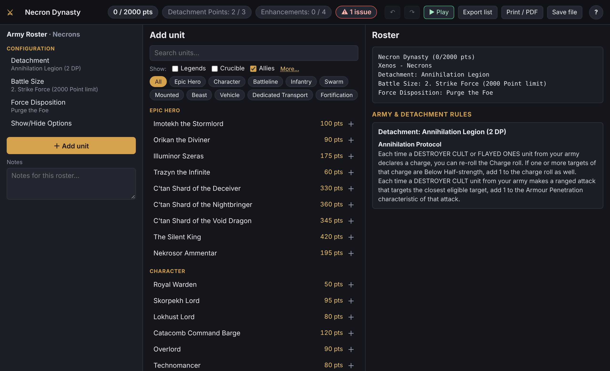
| Area | What's there |
|---|---|
| Top bar | The list name (click to rename), total points, Detachment Points, Enhancements used, the list check, undo/redo, ▶ Play, Export list, Print / PDF, Save file and ? (this guide). On smaller screens some labels are shortened – e.g. DP for Detachment Points and Export / Print. |
| Left column | Your army, grouped by section (Configuration, Character, Battleline…). Click any entry to edit it. Notes for the list sit at the bottom. |
| Middle column | Either the Add unit list, or the options for the unit you've selected. |
| Right column | The selected unit's datasheet, or – when no unit is selected – a summary of the whole list with your detachment rules and enhancements. |
Adding units
- Click ＋ Add unit on the left (the Add unit list also shows whenever no unit is selected).
- Type in the search box, or click a category chip (Character, Battleline, Vehicle…) to narrow the list. Points are shown next to each unit; a ×2 badge shows how many you already have.
- Click a unit to add it. It's added with its default models and wargear, and opens so you can change its options.
Show: Legends, Crucible, Allies
Above the categories, the Show tick boxes control what appears in the Add unit list:
- Legends and Crucible units are hidden until you tick them (this setting is saved with each list).
- Allies (Titans, Imperial Agents, etc.) are shown until you untick it (this setting is remembered for all lists).
- More… opens the full set of show/hide switches from the data (Titans, Unaligned Forces, Crusade content and more).
Choosing wargear & options
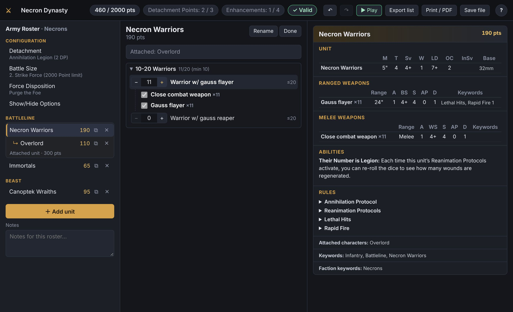
When a unit is selected, its choices appear in the middle column. The kind of control tells you what's allowed:
| Control | Meaning |
|---|---|
| ◉ round button | Pick one from the group (e.g. a weapon choice). Picking another replaces it. |
| ☑ tick box | Take it or not – at most one (Warlord, enhancements, relics). A greyed-out tick means it's required. |
| − 10 + counter | Choose how many (e.g. models in the unit). The small grey text on the right shows the allowed range, e.g. ≤20 or 5–10. |
| ⓘ | Shows that option's rule text without selecting it. |
- Groups (such as “10-20 Warriors” or “Weapons”) show how many you've picked and the limits, e.g.
11/20 (min 10). Red means you're outside the limit. Click a group heading to fold it away. - Options with points show their cost on the right, e.g.
+20. - When you pick a detachment or an enhancement, its rules appear underneath it automatically.
- The ×11 next to weapons means “one each for all 11 models”.
Click Done (or ＋ Add unit) when you've finished with a unit.
Attaching Leaders
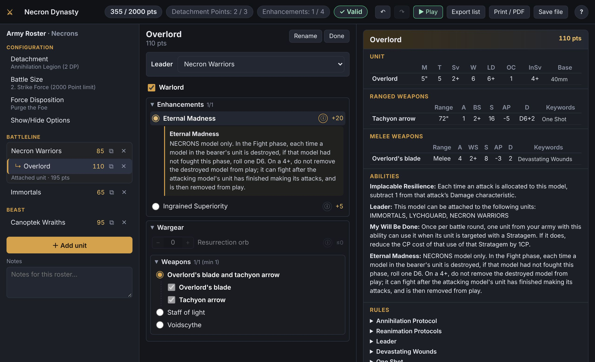
- Add both the character and the unit you want them to lead.
- Select the character. At the top of its options there's a Leader (or Supported by) drop-down.
- Choose the unit. Only units that character is allowed to join are listed; if a unit already has a Leader it says “(with …)”.
The character then appears indented under that unit on the left, with the combined points (“Attached unit · 300 pts”). Rules that depend on attachments – like extra keywords for the unit – are applied automatically. The list check warns you if you put two Leaders on a unit that only allows one, or forget to attach a character that must be attached. To detach, choose “— not attached —”.
Detachments, battle size & configuration
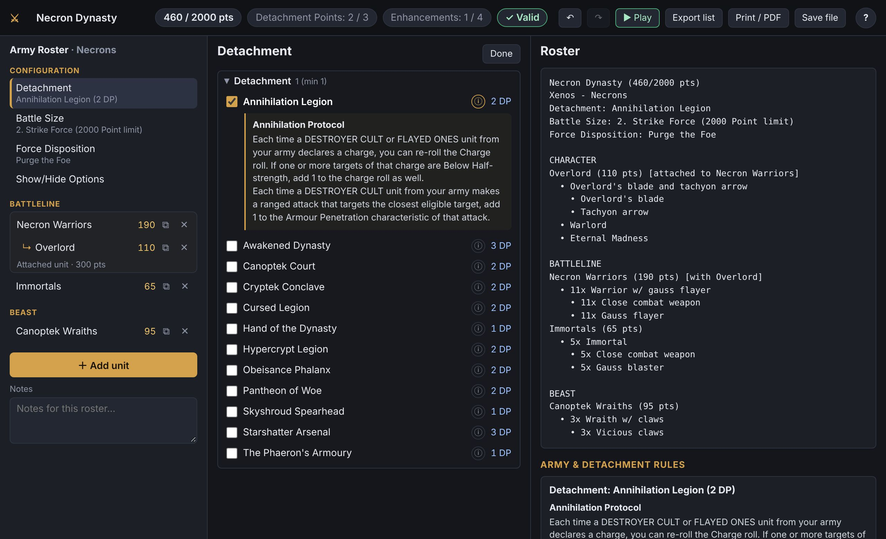
The Configuration section at the top of your army holds the list-wide choices. Click one to change it:
- Detachment – tick the detachment(s) you're using. In 11th edition each detachment costs Detachment Points – the cost is shown in blue next to each detachment (e.g. 2 DP), and next to your chosen detachments on the left. The top bar shows how many you've used out of your limit.
- Battle Size – sets your points limit, Detachment Points and enhancement limits. For a custom game, tick Override points limit? and set your own Points limit; a Detachment Points limit box also appears so you can set how many Detachment Points you get (it starts at the battle size's amount – Use battle size limit puts it back). Unticking the override returns to the normal limits.
- Force Disposition – your force disposition choice. Each detachment shows icons for the force dispositions it gives you (e.g. Purge the Foe, Take and Hold, Priority Assets, Reconnaissance, Disruption) – next to it in the detachment list, under Configuration on the left and in the army rules. Hover an icon to see its name.
- Show/Hide Options – the data's show/hide switches (the same ones as More… in the Add unit list).
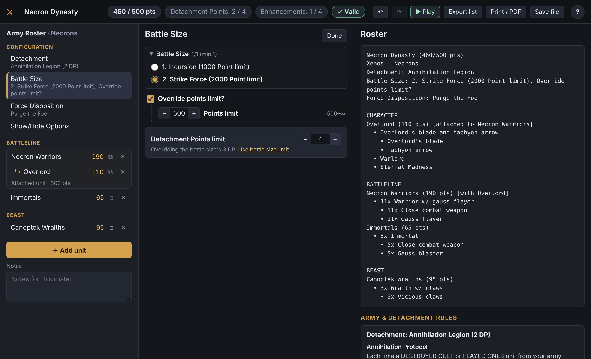
Points & list checks
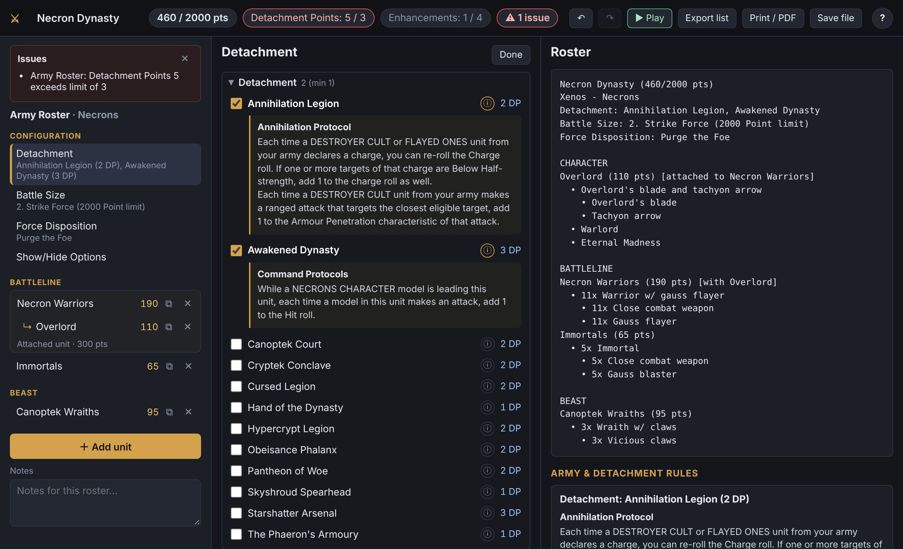
The program checks your list against the rules in the data as you build. The top bar shows:
- Points, e.g.
460 / 2000 pts– red if you're over the limit. - Detachment Points and Enhancements used, out of your limits.
- ✓ Valid when everything is fine, or ⚠ 1 issue when there's a problem. Click it to see the list of issues; click an issue to jump to the unit. Units with problems have a red edge on the left, and the problem is also shown at the top of the unit's options.
Things that are checked include: points limit, minimum and maximum unit sizes and wargear, how many of each unit you can take for your battle size (e.g. 2 of each in Incursion, 3 in Strike Force, double for Battleline and Dedicated Transports, 1 of each Epic Hero), unique characters, that you've chosen a Warlord, Detachment Points, enhancement limits (including only one per attached unit) and Leader attachments.
Datasheets & gold values
The right-hand column shows the selected unit's datasheet: its stats, weapons (with how many of each), abilities, rules (click a rule name to read it), keywords and what it's attached to.
Values shown in gold have been changed by something in your list – wargear, an enhancement, an attached character or your detachment. For example, an enhancement that gives +1 Strength shows the new Strength in gold, and new weapon keywords appear in gold. A small tag next to a weapon's name shows what changed it. Hover over a gold value to see what it was before.
With no unit selected (click Done), the right-hand column shows a text summary of the whole list, followed by Army & detachment rules and the Enhancements you've taken (who has them and their cost).
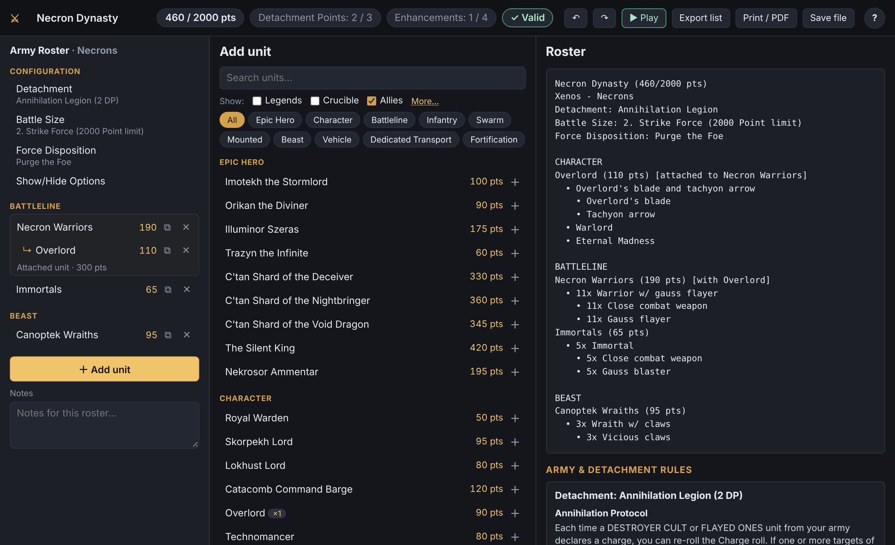
Renaming, copying, removing & undo
- Rename the list: click its name in the top bar and type.
- Give a unit a nickname: select it and click Rename (e.g. “Squad Ares”). The real name still shows alongside.
- Copy a unit: ⧉ next to it on the left. Remove a unit: ✕.
- Undo / redo: the ↶ ↷ buttons, or Ctrl+Z / Ctrl+Y.
- Notes: the box at the bottom left – handy for reminders or tactics. Notes are included in exports.
Everything is saved automatically as you go.
4. Play mode
Play mode turns your list into a read-only game companion – your list can't be changed by accident while you play. Open a list and click ▶ Play in the top bar.
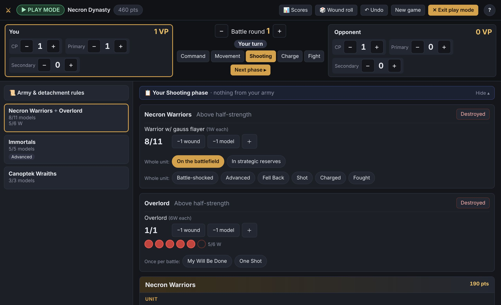
The scoreboard
- You and Opponent each have CP, Primary and Secondary VP counters with big − + buttons, and a VP total. Click “Opponent” to type their name. The player whose turn it is gets a gold outline.
- Battle round with − +.
- Whose turn – click it to switch. (If your opponent goes first, click it before you start.)
- Phases – Command, Movement, Shooting, Charge, Fight. Click one to jump to it, or press Next phase ▸. After the Fight phase it passes the turn to the other player, and after both players' turns it starts the next battle round.
- +1 CP each appears in the Command phase – both players gain 1 CP.
Score by round
Every Primary and Secondary VP you add is recorded against the current battle round. 📊 Scores in the top bar shows a table of what each player scored in each round, with each round's total and the running score (e.g. 12 – 15). The current round is highlighted. If you add VP by mistake, press − on the scoreboard – it comes off the current round (or use ↶ Undo). The same table appears in the end-of-battle results.
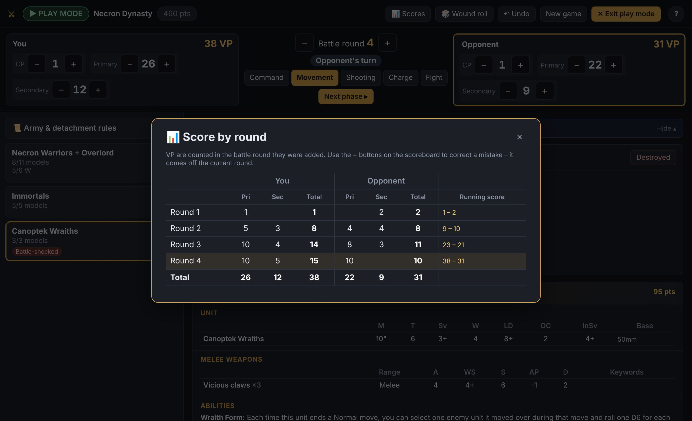
The end of the battle & overtime
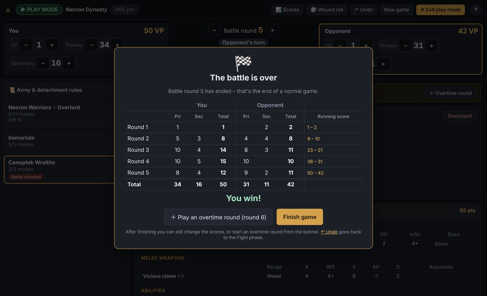
A normal game lasts five battle rounds. In the last phase of round 5 the button changes to End battle 🏁. Pressing it shows the results: the score for each round, each player's Primary, Secondary and total VP, and who won (or a draw).
- ＋ Play an overtime round carries on into round 6 (marked Overtime). At the end of an overtime round you get the results again, with the option of another one.
- Finish game closes the results. A Game over banner stays at the top with the final score; you can still adjust scores, reopen the results, or start an overtime round from there.
- ↶ Undo takes you back to the Fight phase if you ended the battle by mistake.
Phase reminders
At the top of the right-hand side, a 📋 phase reminders box lists everything in your army that happens in the current phase – for example Reanimation Protocols at the end of your Command phase, or an ability used "at the start of your Shooting phase". It follows the scoreboard, so it changes as you press Next phase ▸ and shows different things in your turn and your opponent's turn.
- Reminders are grouped into Army & detachment rules, Unit abilities, Rules (such as Heavy or Deep Strike) and Any phase (abilities usable "at the start of any phase"), with the units that have them. Things that happen at the start of the battle round show in the first player's Command phase (and "at the start of the first battle round" only in round 1); things at the end of the battle round show in the second player's Fight phase.
- The part of the text that mentions the phase is highlighted. Click a reminder to see its full text.
- Destroyed units drop off the list. Click the box's heading to hide or show it.
Tracking your units
The left column lists your units. Leaders appear on the same card as the unit they lead. Each card shows models or wounds left, turns gold when the unit is at or below half-strength, shows its markers, and moves to a Destroyed section at the bottom when it's wiped out.
Click a unit to open its tracker and datasheet. For each kind of model in the unit:
| Button | What it does |
|---|---|
| −1 wound | Takes a wound off the damaged model. When it runs out of wounds, that model is removed and the next one starts fresh. |
| −1 model | Removes a whole model. |
| ＋ | Heals the damaged model, or brings a model back. |
| Red dots | For models with several wounds: tap a dot to set how many wounds the damaged model has left. |
| Destroyed | Marks the whole unit as destroyed in one go. |
Damaged models
Big models such as vehicles, monsters and characters like Mortarion often have a Damaged ability – for example "Damaged: 1-6 wounds remaining – subtract 1 from the Hit roll". When you take the model down into that range, play mode applies it for you: a red ⚠ Damaged banner appears on its datasheet, the affected values are shown in red (BS/WS shown as the roll now needed – e.g. 3+ becomes 4+ for "subtract 1 from the Hit roll", never worse than 6+ since an unmodified 6 always hits – the reduced OC, or halved Attacks; hover a red value to see the normal one), and the unit gets a Damaged tag in the list. Heal it back above the range and everything returns to normal. Anything else the ability says (such as "you can only select one ability") is shown as text in the banner.
Below that are the markers: Battle-shocked, Advanced, Fell Back, Shot, Charged, Fought. Tap to switch them on (gold) or off. For a Leader and their unit, the markers are shared by the whole unit.
- Advanced, Fell Back, Shot, Charged and Fought clear automatically at the end of each turn.
- Battle-shocked never clears by itself – see the next section.
- Once per battle abilities found in the unit's rules get their own buttons – tap to cross them off when used.
📜 Army & detachment rules at the top of the unit list shows your detachment rules and enhancements.
Wound roll reminder
🎲 Wound roll in the top bar opens the wound roll table from the core rules (unmodified 1 fails, unmodified 6 is a critical wound, and the Strength vs Toughness chart). Set the attack's Strength and the target's Toughness at the bottom and the matching row is highlighted, with the number needed (e.g. Wounds on 3+). Close it with ✕ or by clicking outside it.
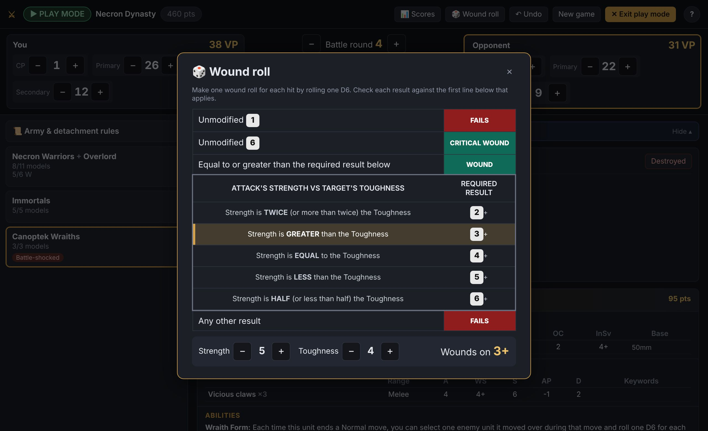
Strategic reserves
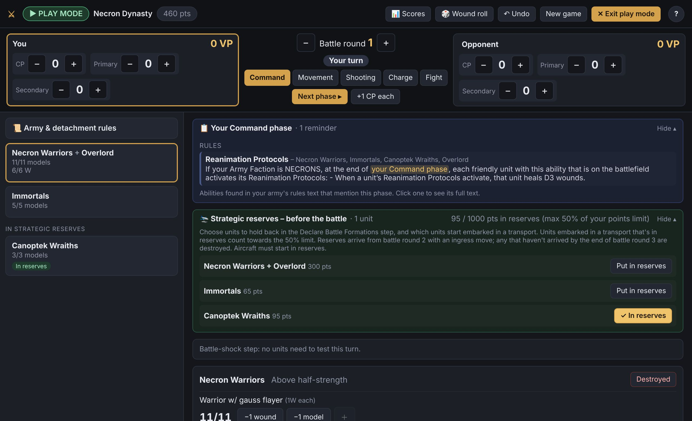
Before you press Next phase ▸ for the first time, a 🛬 Strategic reserves – before the battle box lets you choose which units start in reserves. It adds up their points against the limit (50% of your points limit) and warns you if you go over. Aircraft are put in reserves automatically, and units with Deep Strike are labelled.
- Round 1: units in reserves can't arrive yet.
- Your Movement phase from round 2: the box lists your units in reserves with the ingress move rules (within 6" of a battlefield edge, more than 8" from enemy units, not in your opponent's deployment zone before round 3, or anywhere more than 8" away for Deep Strike). Press Arrived ✓ when a unit comes on.
- Your opponent's Movement phase: a Rapid Ingress reminder lets one unit (not Aircraft) arrive for 1 CP – Arrived (−1 CP) takes the CP off for you.
- End of battle round 3: units that never arrived are marked destroyed (Undo reverses this). Units you put back into reserves during the battle aren't affected.
- Aircraft on the battlefield go back into reserves automatically at the end of your opponent's turn.
Units embarked in a transport
Use the Embarked in… drop-down (in the before-the-battle box, or in a unit's tracker) to put a unit inside one of your transports. Embarked units are listed under their transport, and the transport's tracker shows its capacity and what's inside.
- Units embarked in a transport that's in strategic reserves count towards the 50% reserves limit, and arrive with it.
- If the transport never arrives, it and everything inside are destroyed at the end of battle round 3.
- Disembark puts the unit on the battlefield. Embarked units don't take Battle-shock tests.
You can also move any unit in or out of reserves with the Location buttons in its tracker. Units in reserves are listed separately on the left, and don't appear in the Battle-shock step.
The Battle-shock step
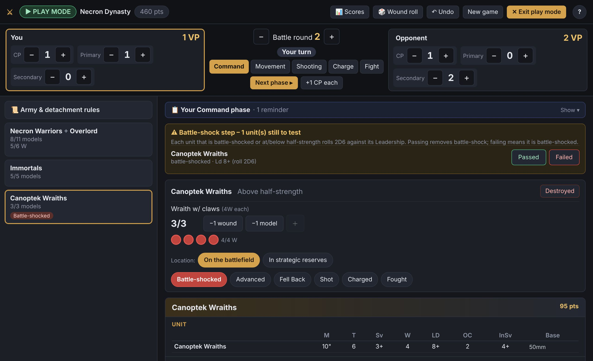
During your Command phase, a Battle-shock step panel appears at the top. It lists every unit that is battle-shocked or at/below half-strength, with its Leadership. Roll 2D6 for each, then press:
- Passed – the unit is no longer battle-shocked.
- Failed – the unit is battle-shocked.
If you press the wrong one, click change. The heading counts how many units are still to test.
Undo, new game & exit
- ↶ Undo reverses your last change in the game.
- The game saves itself – you can close the browser mid-game and carry on later from the same list.
- New game clears all wounds, scores and markers.
- ✕ Exit play mode goes back to editing your list.
5. Exporting, printing & importing
Export list
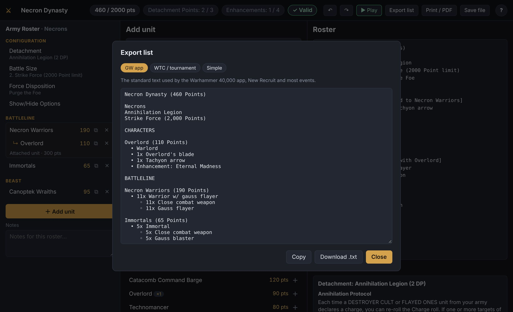
Click Export list in the top bar and choose a format:
| Format | Use it for |
|---|---|
| GW app | The standard layout used by the Warhammer 40,000 app, New Recruit and most events. Paste it into messages, forums or event websites. |
| WTC / tournament | The compact “+++” format many tournament organisers ask for (warlord, enhancements and unit lines with Char1, Char2…). |
| Simple | This program's own easy-to-read summary, including which characters are attached to which unit. |
Click Copy to copy it, or Download .txt to save it as a text file.
Print / PDF
Print / PDF prints your whole list: the summary, a page with your detachment rules and enhancements, a datasheet for every unit (with modified values underlined), and a rules reference at the end with every weapon keyword and special rule your army uses. To make a PDF, choose Save as PDF (or Microsoft Print to PDF) as the printer.
Saving & backing up lists
Save file (top bar) – or ⭳ on the home screen – saves a list as a .roster.json file. Use it to:
- Back up your lists (browser data can be lost if you clear your browsing history).
- Move lists to another browser or computer.
- Share a list with someone else who has this program – it keeps everything exactly, including attachments, nicknames and notes.
To open one, use Import list… → This app's roster file.
Importing a list
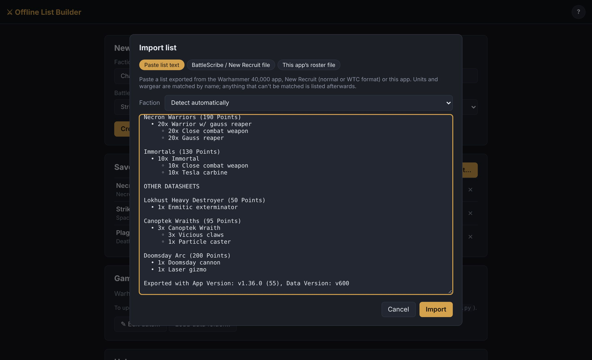
On the home screen click Import list… and choose a tab:
| Tab | What it accepts |
|---|---|
| Paste list text | Text exported from the Warhammer 40,000 app, New Recruit (normal or WTC format) or this program. The faction is detected automatically, or you can pick it. Units and wargear are matched by name – small spelling mistakes are fixed, and models named differently from the data are worked out from their wargear. |
| BattleScribe / New Recruit file | .rosz or .ros roster files. These are matched exactly, because they use the same data as this program. |
| This app's roster file | .roster.json files made with Save file. |
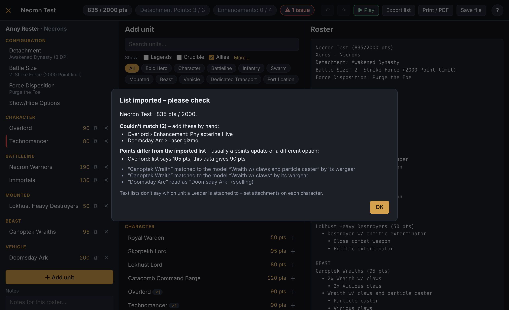
After importing, a report tells you:
- Couldn't match – items it couldn't find (often things that no longer exist in 11th edition, or a typo too big to guess). Add them by hand if needed.
- Points differ – units whose points in the imported list don't match this program's data. Usually the list was made with an older or newer points update.
- Notes about guesses it made, such as a spelling it corrected.
6. Keeping the data up to date
All the units, points and rules come from the community BSData project's Warhammer 40,000 11th edition files, which sit in the wh40k-11e-main folder. The program reads a prepared copy of them from the data folder.
When BSData releases fixes or a new points update, you can update in one of three ways:
Easiest: Load data folder
Download the new BSData files, then on the home screen click Load data folder… and choose the folder with the.json files. The new data is stored in your browser and used straight away. Use bundled data switches back to the program's own data folder.For everyone who uses this folder
Replace the.json files in wh40k-11e-main and run build_data.py (needs Python), which rebuilds the data folder. Or open the folder in the data editor and save any change – the data folder is rebuilt automatically.wh40k-11e-main replaces any edits you've made with the data editor. Keep a copy of your edited files, or use the editor's Backups.7. The data editor (advanced)
The data editor lets you fix and update the army data yourself: change points, stats, weapons and rules, add options, and add brand-new units. Most players never need it.
Opening your folder
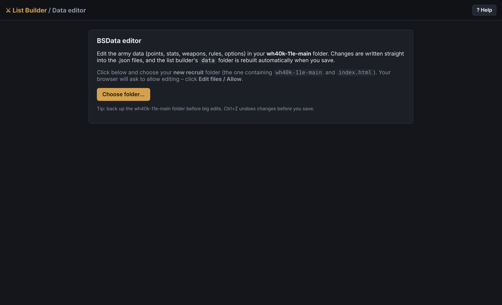
- Open
editor.htmlin Chrome or Edge – or click ✎ Edit data… on the list builder's home screen. - Click Choose folder… and select the program's folder (the one containing
index.htmlandwh40k-11e-main). - When the browser asks, click Edit files / Allow.
Next time, a Reopen “…” button takes you straight back in. If you've moved the folder, use Choose folder again.
Finding things
- Search all files by name (left, top): type a unit, weapon, rule or enhancement name. Each result says what it is and which file it's in.
- Browse a file: pick a faction from the drop-down. Units are under Units / root entries (links); other sections hold shared wargear, profiles, rules and keywords. Use Filter this file… to narrow the tree, and the ▸ arrows to look inside entries.
The unit page
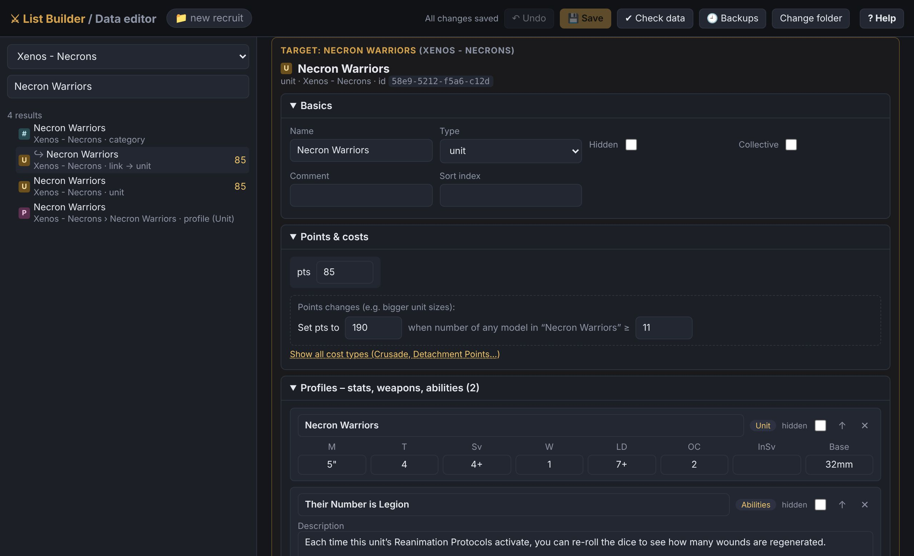
A unit's page is split into sections you can open and close:
| Section | What you can change |
|---|---|
| Basics | Name, type (unit / model / upgrade), hidden. |
| Points & costs | The points value, plus points changes such as “set to 190 when the unit has 11 or more models”. Add a points change for larger unit size creates a new one. |
| Profiles | Stat lines (M, T, Sv, W, Ld, OC…), weapon profiles and ability text. Add or remove profiles. |
| Rules | Rules written directly on the unit. |
| Options / contents | The models and wargear choices inside the unit: open, reorder, delete, add a new option or group, or link an existing piece of wargear. |
| Limits – min/max | How many of something are allowed (per unit, per army, etc.), with a plain-English description of each limit. |
| Modifiers | Rules that change things under conditions (e.g. points by unit size, hiding an option unless a detachment is chosen). Each shows a readable summary; complex ones have a JSON button. |
| Can lead / attach to | For characters – see Leaders. |
| Categories / keywords | The unit's keywords. The Primary one decides which section of the army list it appears in (Character, Battleline…). |
| Linked rules & profiles | Shared rules and abilities the unit uses (e.g. weapon keyword rules). |
| Used by | Everywhere this item is linked from. |
| Advanced – raw JSON | The underlying data, for anything the forms don't cover. |
Use ⧉ Duplicate and 🗑 Delete at the top of the page to copy or remove the item.
The points table
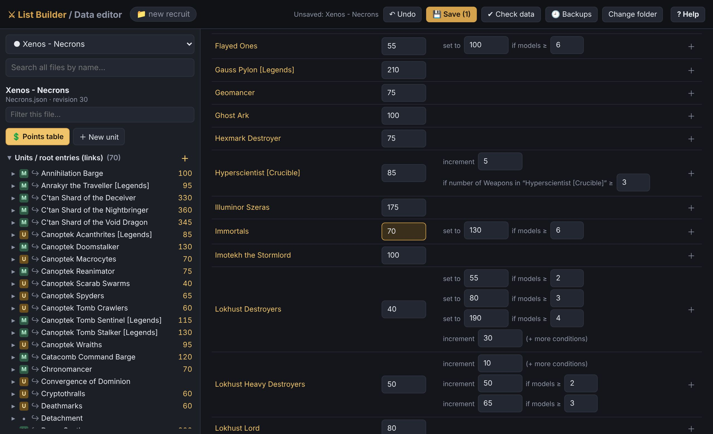
For points updates, choose a faction and click 💲 Points table. Every unit is listed with its points and any price changes for bigger units; enhancements and other paid upgrades are listed underneath. Type new values straight in – changed values turn gold (hover to see the old value). Use Filter units…, Hide Legends and Hide Crucible to shorten the list. The ＋ at the end of a row adds a unit-size price change.
Adding a new unit
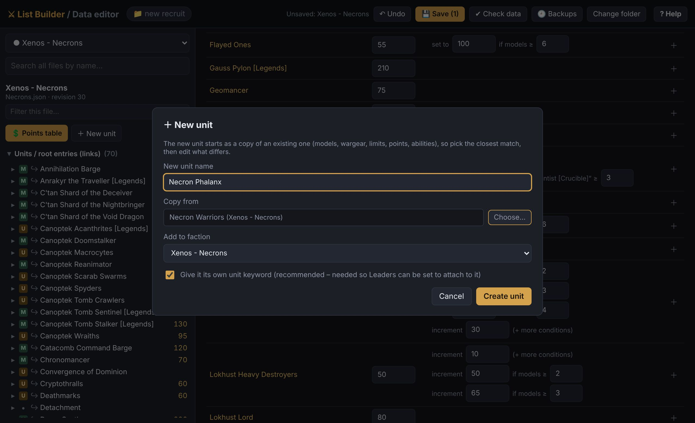
- Click ＋ New unit (left panel or points table).
- Type the new unit's name and click Choose… to pick the existing unit that's most similar.
- Check the faction, leave Give it its own unit keyword ticked, and click Create unit.
- The new unit is a full copy (models, wargear, limits, points, abilities) and is already added to the faction's unit list. Now change whatever is different: points, stats, weapons, options.
- If it's a character, set what it can lead (next section). If other Leaders should be able to join it, add the new unit to their “Can lead” lists.
- Save, run Check data, then reload the list builder.
Adding a new detachment
- Pick the faction in the file list, then click ＋ New detachment (next to ＋ New unit).
- Type the new detachment's name. Under Copy from, search all factions' detachments by name or faction and click the one that's most similar. Add to chooses which list it goes in – for Space Marine chapters this is the Space Marines list, which every chapter shares.
- Set its Detachment Points and tick its Force dispositions. Leave Copy its enhancements too ticked to start with copies of that detachment's enhancements, or untick it to start with none.
- Click Create detachment. The new detachment opens with a Detachment section listing its rules and enhancements – click each one to rename it and rewrite its text and points. The original detachment isn't changed.
- ＋ Add enhancement adds another enhancement that only appears with this detachment. Use ＋ Add rule in the Rules section for extra rules or stratagems.
- Save, then reload the list builder – the new detachment appears in the Detachment list with its cost and icons.
When you copy from another faction, its rules and enhancements are copied across too; their text may mention the other faction's keywords (e.g. NECRONS), so read them through and change what's needed.
The same Detachment section appears on every existing detachment, so you can also change an existing detachment's Detachment Points or force dispositions there.
Leaders: “Can lead / attach to”
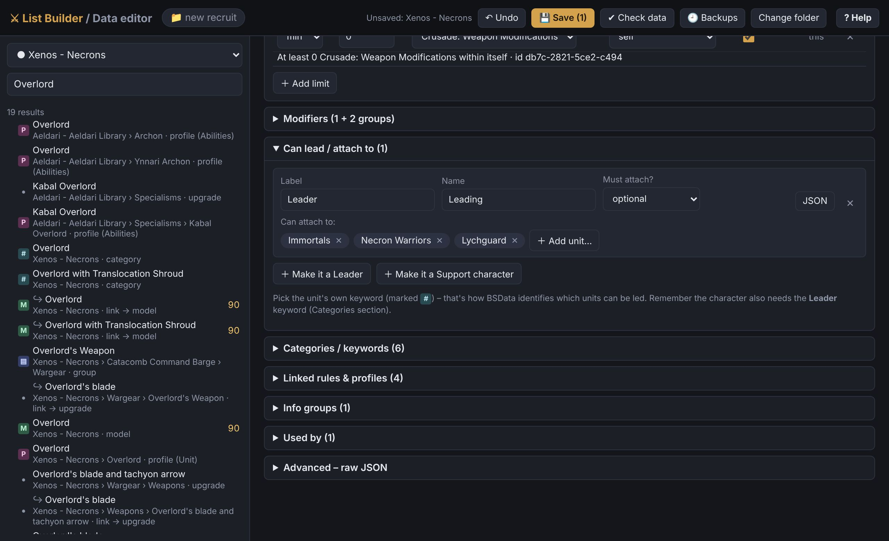
- Each unit the character can join is shown as a tag – ✕ removes it, ＋ Add unit… adds one. Pick the unit's own keyword (marked # in the picker).
- ＋ Make it a Leader / ＋ Make it a Support character turn a model into a character that can attach. Remember to give it the Leader keyword too.
- Some lists use combination rules (e.g. “this unit, but only with that detachment”). These are shown as text; edit them with the JSON button.
Adding stratagems
The BSData files don't include stratagems. If you want them in your list summary and printouts, open your detachment in the editor (search for its name), go to its Rules section and click ＋ Add rule for each one – for example “Stratagem: Protocol of the Undying Legions” with its text. They'll then appear with the detachment rules everywhere in the list builder.
Check data
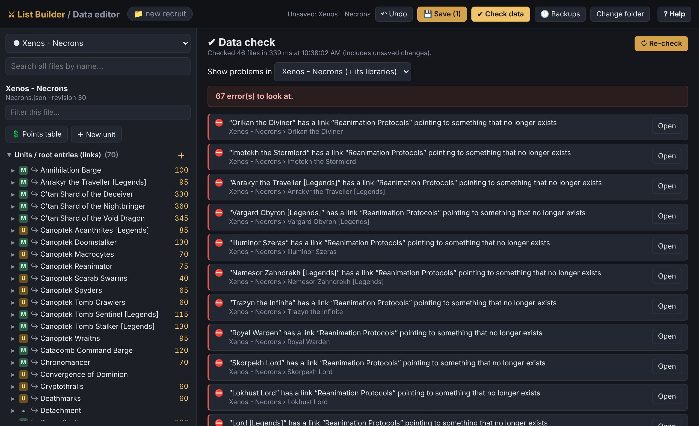
✔ Check data (top bar) looks for mistakes, especially ones that are easy to make when adding units:
- links, keywords or rules pointing to something that was deleted;
- units with no points, no army-list section, no Faction keyword, no stat profile or no models;
- units not added to any faction's unit list, or two units with the same name;
- a unit using another unit's keyword (so the wrong Leaders can join it);
- Leaders that can't lead anything, empty profiles, and limits or conditions that refer to things that don't exist.
New problems are listed first, each with an Open button. Problems that were already in the original BSData files are listed separately underneath and are usually safe to ignore. The check also runs automatically after every save, and a red banner appears on any unit page with a problem.
Saving, undo & backups
- 💾 Save (or Ctrl+S) writes your changes into the
.jsonfiles and rebuilds the list builder'sdatafolder. Reload the list builder to see them. The top bar lists files with unsaved changes. - ↶ Undo (or Ctrl+Z) reverses changes before you save.
- Backups: every save first copies the previous version of each changed file into a
backupsfolder (one dated folder per save). 🕘 Backups lists them and can Restore any file – your current version is backed up first, so a restore can be undone too. Old backups are only deleted when you choose to.
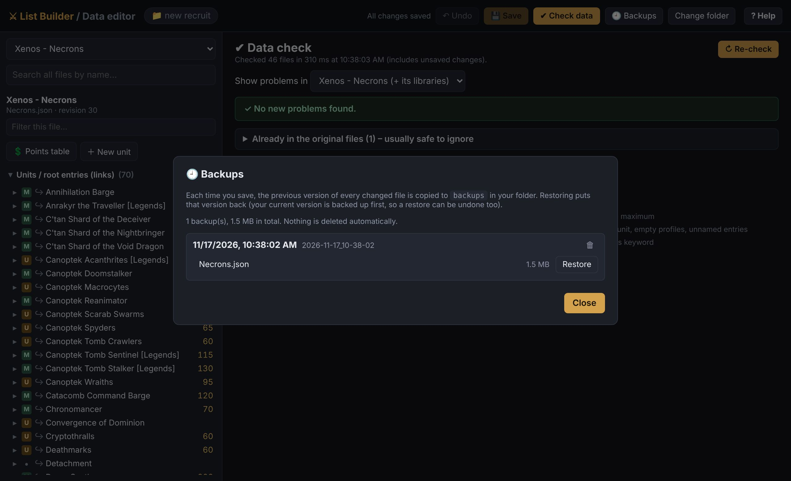
8. Troubleshooting & FAQ
It says “No game data found”, or nothing loads.
You're probably running it from inside a .zip file. Extract the zip first (right-click → Extract All…) and open index.html from the extracted folder.
A button does nothing, or the screen looks out of date.
Press Ctrl+F5 to reload the page fully. This is also needed after updating the program's files.
My lists have disappeared.
Lists are stored in the browser. Check you're using the same browser (and the same browser profile) as before. Clearing your browsing data also clears them – keep backups with Save file.
I can't find a unit.
It may be a Legends or Crucible unit, or hidden by a show/hide switch – tick Legends / Crucible or use More… in the Add unit list. Some units only appear with a particular detachment.
An enhancement or option is missing.
Many enhancements and options belong to a specific detachment. Change your detachment and they'll appear.
The points don't match another app.
The other app may be using a different points update. Points come from the BSData files in your folder – see Keeping the data up to date, or fix them with the points table.
My changes in the data editor don't show in the list builder.
Make sure you clicked Save in the editor, then reload the list builder (Ctrl+F5). If the home screen says the data source is “imported folder”, click Use bundled data so it reads the folder you edited.
Reopen doesn't open my folder.
Reopen asks Chrome for permission to edit the folder you used last time – look for a small pop-up near the address bar and choose Allow / Edit files. If something goes wrong, a message under the buttons says why (for example the folder was moved or renamed). Choose folder… always works: it opens in your last folder, so you just click Select folder.
The editor can't save.
Saving needs Chrome or Edge, and you must allow editing when asked. In other browsers the editor works read-only and changed files are downloaded instead.
Can I give this to friends?
Yes – zip up the whole folder (or use a share copy) and they can put it anywhere. Each person's lists are stored in their own browser; share individual lists with Save file.
Does it need the internet?
No. Everything runs from the folder on your computer.
9. Keyboard shortcuts
| Keys | Where | What it does |
|---|---|---|
| Ctrl+Z | List builder, data editor | Undo |
| Ctrl+Y or Ctrl+Shift+Z | List builder | Redo |
| Ctrl+S | Data editor | Save |
| Ctrl+F5 | Anywhere | Reload the page fully |
10. About the data
Unit data, points and rules text come from the community-maintained BSData project (github.com/BSData/wh40k-11e). It is not official, may contain mistakes, and is not endorsed by Games Workshop. Stratagems are not included in the BSData files. Always check against your official rules if something looks wrong – and you can fix it yourself with the data editor.